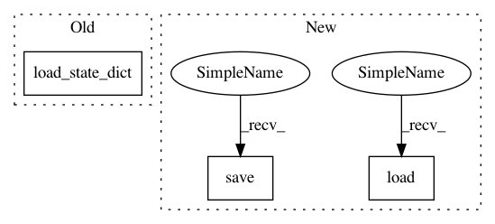

79fc09d66d3f4736b9fb4f5756a78725719f3808,train.py,,train,#Any#,27
Before Change
// Load the optimizer
if infos.get("state_dict", None):
optimizer.load_state_dict(infos["state_dict"])
while True:
if update_lr_flag:
// Assign the learning rate
After Change
// Load the optimizer
if vars(opt).get("start_from", None) is not None:
optimizer.load_state_dict(torch.load(os.path.join(opt.start_from, "optimizer.pth")))
while True:
if update_lr_flag:
// Assign the learning rate
if epoch > opt.learning_rate_decay_start and opt.learning_rate_decay_start >= 0:
frac = (epoch - opt.learning_rate_decay_start) // opt.learning_rate_decay_every
decay_factor = opt.learning_rate_decay_rate ** frac
opt.current_lr = opt.learning_rate * decay_factor
utils.set_lr(optimizer, opt.current_lr) // set the decayed rate
else:
opt.current_lr = opt.learning_rate
// Assign the scheduled sampling prob
if epoch > opt.scheduled_sampling_start and opt.scheduled_sampling_start >= 0:
frac = (epoch - opt.scheduled_sampling_start) // opt.scheduled_sampling_increase_every
opt.ss_prob = min(opt.scheduled_sampling_increase_prob * frac, opt.scheduled_sampling_max_prob)
model.ss_prob = opt.ss_prob
update_lr_flag = False
start = time.time()
// Load data from train split (0)
data = loader.get_batch("train")
print("Read data:", time.time() - start)
start = time.time()
tmp = [data["fc_feats"], data["att_feats"], data["labels"], data["masks"]]
tmp = [Variable(torch.from_numpy(_)).cuda() for _ in tmp]
fc_feats, att_feats, labels, masks = tmp
optimizer.zero_grad()
loss = crit(model(fc_feats, att_feats, labels)[:, 1:], labels[:,1:], masks[:,1:])
loss.backward()
utils.clip_gradient(optimizer, opt.grad_clip)
optimizer.step()
train_loss = loss.data[0]
end = time.time()
print("iter {} (epoch {}), train_loss = {:.3f}, time/batch = {:.3f}" \
.format(iteration, epoch, train_loss, end - start))
// Update the iteration and epoch
iteration += 1
if data["bounds"]["wrapped"]:
epoch += 1
update_lr_flag = True
// Write the training loss summary
if (iteration % opt.losses_log_every == 0):
loss_history[iteration] = train_loss
lr_history[iteration] = opt.current_lr
ss_prob_history[iteration] = model.ss_prob
// make evaluation on validation set, and save model
if (iteration % opt.save_checkpoint_every == 0):
// eval model
eval_kwargs = {"split": "val",
"dataset": opt.input_json}
eval_kwargs.update(vars(opt))
val_loss, predictions, lang_stats = eval_utils.eval_split(model, crit, loader, eval_kwargs)
val_result_history[iteration] = {"loss": val_loss, "lang_stats": lang_stats, "predictions": predictions}
// Save model if is improving on validation result
if opt.language_eval == 1:
current_score = lang_stats["CIDEr"]
else:
current_score = - val_loss
best_flag = False
if True: // if true
if best_val_score is None or current_score > best_val_score:
best_val_score = current_score
best_flag = True
checkpoint_path = os.path.join(opt.checkpoint_path, "model.pth")
torch.save(model.state_dict(), checkpoint_path)
print("model saved to {}".format(checkpoint_path))
optimizer_path = os.path.join(opt.checkpoint_path, "optimizer.pth")
torch.save(optimizer.state_dict(), optimizer_path)
// Dump miscalleous informations
infos["iter"] = iteration
infos["epoch"] = epoch
In pattern: SUPERPATTERN
Frequency: 3
Non-data size: 3
Instances
Project Name: ruotianluo/self-critical.pytorch
Commit Name: 79fc09d66d3f4736b9fb4f5756a78725719f3808
Time: 2017-02-10
Author: rluo@ttic.edu
File Name: train.py
Class Name:
Method Name: train
Project Name: ruotianluo/ImageCaptioning.pytorch
Commit Name: 79fc09d66d3f4736b9fb4f5756a78725719f3808
Time: 2017-02-10
Author: rluo@ttic.edu
File Name: train.py
Class Name:
Method Name: train
Project Name: google/uis-rnn
Commit Name: ac1f07e722b1117642774b04d96e7174751e325c
Time: 2018-10-18
Author: aonan@aonan.nyc.corp.google.com
File Name: demo.py
Class Name:
Method Name: diarization_experiment